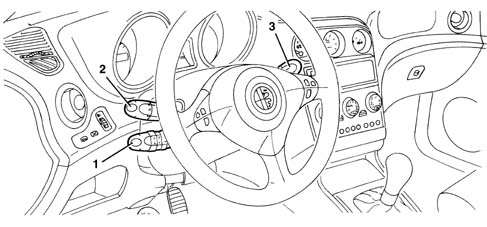
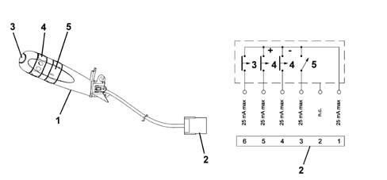

5580A cruise control system
- Path
- Descriptions > 55 ELECTRICAL EQUIPMENT > 5580 SPECIAL ACCESSORIES > 5580A cruise control system
- Kind
- system description
- Applies to
- all engines; all production periods
- Interactive page
- https://sloeber94.github.io/elrnDB-a156/en/#/3232971
Applies to: all engines; all production periods
SPECIFICATIONS
The figure shows the location of the Cruise Control.

1 - Cruise Control lever 2 - Lights/direction indicators lever 3 - Front/rear window wipers lever
OPERATION
The control systems for petrol engine with motorised butterfly and diesel with electronic control of the injection time have, among the available functions, the Cruise Control, i.e. the function which automatically maintains the cruising speed set by the driver.

1 - Cruise Control lever 2 - 6-pin connector 3 - Resume button for recalling the memorised speed 4 - Ring switch for memorising increase/decrease (acceleration position: +; deceleration position: -) 5 - Ring swtich (ON: Cruise activated; OFF: Cruise deactivated)
The Cruise Control is integrated in the steering column switch unit which also controls the direction indicators and front/rear window wiper.
The third lever on the steering column switch incorporates the Cruise Control commands, namely:
- a ring switch for activating/deactivating the system;
- a ring switch which memorises the car's increase/decrease in speed;
- a Resume button for recalling the memorised speed.
The electronic system is managed by the injection unit. It automatically maintains the cruising speed set by the user and actuates this control via a command on the motorised butterfly.
MEMORISATION OF THE PRESELECTED SPEED
To activate the Cruise Control function, it is necessary to:
- activate the bistable ring switch in the ON position;
- bring the car up to the desired speed; remember that the Cruise Control can only be activated for speeds of over 30 km/h. It is advisable to switch it on in fourth gear or upwards, and on road conditions which allow the set speed to be maintained safely.
- operate the ring switch towards the (+) mark: this is switch with automatic return.
- release the accelerator pedal and allow the system to act directly;
- the instrument panel will light up the warning light (LED) fixed in accordance with the signal coming from the fuel injection control unit indicating the Cruise Control operating state. When it goes out, this indicates the deactivation of the system.
VARIATION OF THE MEMORISED SPEED
To change the memorisation of the car speed corresponding to the moment when it was memorised, it is necessary to:
Speed increase:
- operate the ring switch towards the (+) mark: an acceleration ramp is produced at a constant gradient which can be programmed;
- on release of the switch (automatic return of the switch), the system maintains and memorises the new speed reached by the car.
Speed reduction:
- operate the ring switch towards the (-) mark: the car speed is reduced in relation to that set previously by the Cruise Control; release the button and the system will maintain the new speed reached by the car.
The Cruise Control can operate in the entire permitted engine speed range.
FUNCTION OF RESUME BUTTON
By pressing the automatic return button located on the top of the Cruise Control lever, this function enables the care to be brought to the last speed value memorised, if the Cruise Control has been switched off because of particular conditions (e.g. operation of the cluth or use of the stop switch during braking).
In addition the same gear used when the speed is set must be used. If a speed value has not been recognised, pressing the button has no effect.
DEACTIVATION OF THE CRUISE CONTROL (BY THE USER/SUBSYSTEMS)
The Cruise Control is deactivated by the user by:
- turning the ring switch to the OFF position
- switching off the engine;
- operating the brake or clutch pedal (in these cases the last speed reached remains memorised, and can be recalled by pressing the Resume button).
- vehicle speed below the permitted minimum (about 30 km/h) or above the permitted maximum;
- operating the gear lever without using the clutch: the engine rpm and the vehicle speed will not be consistent; in all these cases, pressing the Resume button re-activates the system.
- operating the accelerator with Cruise Control active: by pressing the accelerator (e.g. for overtaking) the Cruise Control permits a temporary increase in the car speed because it is temporarily deactivated, but as soon as the action on the accelerator pedal ceases, the system reactivates the memorised speed setting.
For safety reasons, the ASR and VDC (Vehicle Dynamic Control) functions have priority over the Cruise Control; when the operation of the ASR/VDC is over, the Cruise Control is automatically reactivated at the last speed value memorised.
The Cruise Control is automatically deactivated if:
- acceleration higher than the set limit occurs (e.g. a rapid descent);
- deceleration higher than the sest limit occurs: the gear selector lever is used without the clutch.
However, the system switches off automatically when the signals used by the Cruise software are incorrect because they are attributable to faults in the components;
- vehicle speed sensor;
- accelerator pedal potentiometer;
- plausibility of brake/stop lights switches;
- plausibility of clutch switch;
- lever position on automatic transmissions;
- plausibility of Cruise switch and Resume button;
- plausibility of Cruise switch and (+) (-) buttons;
The Cruise Control system is also deactivated in all cases where errors occur on components which impair engine operation, such as:
- engine management control unit;
- engine rpm sensor;
- electronic throttle body actuators/sensors (petrol engines);
- engine load meter (petrol engines);
- coils (petrol engines);
- fuel injectors;
- high-pressure system components (diesel engines);